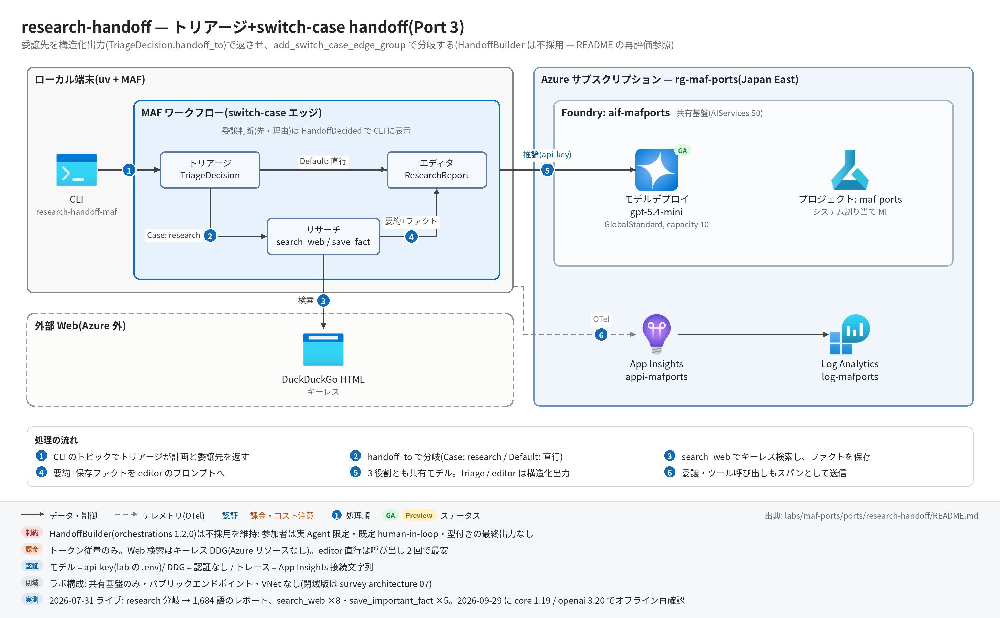

research-handoff 実行ガイド
対象:
labs/maf-ports/ports/research-handoff/(Port 3・パターン: handoff/トリアージ — 構造化出力の委譲判断+ switch-case エッジ)
最終確認: 2026-09-29 オフライン(31 passed・ruff clean・依存 agent-framework-core 1.19.0 / agent-framework-openai 1.14.4 / openai 3.20.0)/ ライブ: 2026-07-31(当時の構成 core 1.12.1 / openai 2.51.0。Azure リソースは削除済み — 再デプロイ手順は §5)
正は本 Markdown。 人間用 HTML(同じディレクトリのrunbook.html)はpython3 labs/tools/build_runbooks.pyで生成する(HTML は直接編集しない)。設計判断と移植の学び(HandoffBuilder を採用しなかった理由と 2026-09-29 の再評価を含む)は README。
1. このパターンで確かめること
- triage が計画+委譲先(
handoff_to)+理由を 1 つの構造化出力(TriageDecision)で返し、handoff_to == "research"なら research → editor、それ以外("editor")なら editor 直行にグラフのエッジ条件で分岐すること。委譲判断は[triage] handoff → ...として必ず可視化される。 - handoff 先が受け取るコンテキストが型付きメッセージとして明示されること: research は計画のクエリ・focus areas、editor は元クエリ+research 要約+
save_important_factで保存されたファクト(元 SDK の「会話履歴の暗黙引き継ぎ」の置き換え)。 - 構造化出力が崩れても止まらないこと: triage のパース失敗 → 既定計画で research に倒す / editor のパース失敗 → 生テキストを本文に(元アプリのフォールバックの踏襲)。
- 技術選定上の意味: 委譲先を事前に列挙できる業務フローなら構造化出力+条件エッジでテスト可能に書ける。列挙できない会話型なら HandoffBuilder(別パッケージ)や元 SDK が有利(README の学び 1・2、再評価節)。
2. 構成

┌─[handoff_to == "research"]─▶ Research ──▶ Editor ─▶ ResearchHandoffResult
topic ─▶ Triage ──┤ (search_web + (要約+facts を
(構造化出力) save_important_fact) プロンプトで受領)
└─[Default("editor" 直行)]──────▶ Editor
進捗: HandoffDecided(triage)/ StageDone(research)→ type="intermediate" → CLI の stderr| コンポーネント | 役割 | 課金 |
|---|---|---|
MAF Workflow(ローカル、workflow.py) |
add_switch_case_edge_group(triage, [Case(research), Default(editor)]) + add_edge(research, editor) |
なし |
MAF Agent ×3(agents.py) |
triage_agent(response_format=TriageDecision)/ research_agent(ツール 2 種)/ editor_agent(response_format=ResearchReport)。OpenAIChatClient(Responses API) |
— |
| モデルデプロイ(共有基盤、既定 gpt-5.4-mini) | 3 役割で 1 デプロイを共用。構造化出力は text.format = json_schema(strict)で送られる |
トークン従量(editor は 1,000 語超の長文出力) |
search_web(search.py / tools.py) |
DuckDuckGo HTML をキーレスで検索(元の WebSearchTool の置き換え) |
なし(外部サイト) |
save_important_fact + FactStore(tools.py) |
research 中のファクトを実行単位のストアに保存(元の Streamlit session_state の置き換え) | なし |
| App Insights(共有基盤) | OTel トレースの送信先(任意) | 取り込み量従量 |
3. 前提
| 区分 | 必要なもの | 備考 |
|---|---|---|
| ツール | uv(Python 3.11 以上。uv が取得。検証は 3.13) | オフライン実行はこれだけ |
| Azure(ライブのみ) | 共有基盤(infra/shared.bicep)のみ。本ポート固有のリソースはない | トークン従量+トレース取り込み |
| 権限 | モデル呼び出しは api-key なのでデータプレーンの RBAC は不要 | roles.bicep(MI 向け)も不要 |
| ネットワーク(ライブのみ) | html.duckduckgo.com への外向き HTTPS |
research 分岐でのみ使う |
環境変数(labs/maf-ports/.env。雛形は .env.example。ライブ実行時のみ必要。本ポート固有の変数はない):
| 変数 | 用途 | 取得元 |
|---|---|---|
FOUNDRY_OPENAI_V1_ENDPOINT |
モデル呼び出し先。必須 | shared.bicep の出力 openaiV1Endpoint |
FOUNDRY_MODEL |
モデルデプロイ名。必須。構造化出力(json_schema strict)に対応したモデルであること | shared.bicep の出力 modelDeploymentName |
FOUNDRY_API_KEY |
api-key 認証。必須 | az cognitiveservices account keys list -n <foundryName> -g <rg> --query key1 -o tsv |
APPLICATIONINSIGHTS_CONNECTION_STRING |
トレース送信先。任意 | shared.bicep の出力 appInsightsConnectionString |
4. オフライン実行(Azure 不要・無料)
cd labs/maf-ports/ports/research-handoff
uv sync --extra dev
uv run pytest # 期待: 31 passed, 1 deselected(live は既定で除外。ネットワーク不要)
uv run ruff check . # 期待: All checks passed!(図生成スクリプト docs/architecture.py も対象)オフラインテストが固定している主な挙動:
- 両分岐:
researchなら triage → research → editor が 1 回ずつ、editorなら research を呼ばず直行し、直行プロンプトにNo web research was performedが入る(test_research_route_runs_research_then_editor/test_editor_route_skips_research) - handoff 先のコンテキスト: research に計画のクエリと focus areas、editor に元クエリ・research 要約・保存ファクトと出典が渡る(
test_research_prompt_carries_plan_context/test_editor_prompt_carries_query_summary_and_facts) - 構造化出力の 3 経路: ネイティブ
.value優先 / 散文包み JSON の抽出 / パース失敗・未知のhandoff_toは既定計画で research に fallback(test_triage_native_value_path/test_triage_json_wrapped_in_prose/test_triage_parse_failure_falls_back_to_research/test_triage_unknown_route_falls_back) - editor のレポートは構造化出力から取り、崩れたら生テキストを本文にする(
test_editor_report_parsed_from_structured_output/test_editor_parse_failure_falls_back_to_raw_report) - 進捗イベント: research 経由は
HandoffDecided1 件+StageDone("research")1 件、editor 直行はStageDoneなし(test_progress_events_research_route/test_progress_events_editor_route) - 実
Agentでの配線: triage / editor にresponse_format、research にsearch_webとsave_important_fact(tests/test_agents_build.py) -
--json用のto_dict()が JSON 直列化できる(test_result_to_dict_is_json_serializable)
5. ライブ実行(Azure 必要・課金あり)
5.1 デプロイ
# 共有基盤が未作成なら先に作る(→ labs/maf-ports/infra/docs/runbook.md §5)。本ポート固有のリソースはない。
cd labs/maf-ports/ports/research-handoff
az deployment group create -g <rg> -f infra/main.bicep -p baseName=<baseName> \
--query properties.outputs -o json # 任意: 共有基盤の存在確認(existing 参照+出力のみ)5.2 実行
uv sync --extra dev --extra live
# research 分岐が期待されるトピック(鮮度依存)
uv run research-handoff-maf "best affordable espresso machines for a French press upgrader"
# editor 直行が期待されるトピック(教科書的知識)
uv run research-handoff-maf "Explain the difference between TCP and UDP for a junior engineer"
# 保存ファクトも表示 / 全出力を JSON で
uv run research-handoff-maf --show-facts "..."
uv run research-handoff-maf --json "..." > result.json
uv run pytest -m live # ライブスモーク(topic "Recent developments in AI coding agents for enterprises"。1 passed が期待)期待される出力の例(値は実行ごとに変わる。語数は 2026-07-31 のライブ実測):
[triage] handoff → research (<triage が返した 1 文の理由>) ← stderr
[research] done (<N> chars) ← stderr(editor 直行では出ない)
# <レポートのタイトル> ← stdout
## Outline
1. ...
<本文(Markdown、長文)>
## Sources
1. https://...
(word count: 1684) ← stderr--json の形: {"topic", "handoff_to", "reason", "plan": {"topic", "search_queries", "focus_areas"}, "research_md", "facts": [{"fact", "source", "timestamp"}], "report": {"title", "outline", "report", "sources", "word_count"}}(editor 直行では research_md が null、facts が空)。
6. 確認観点
| 確認 | # | 観点 | 確認方法 | 期待結果 |
|---|---|---|---|---|
| 1 | 正常系: research 経由 | §5.2 の espresso トピック | stderr に [triage] handoff → research (...) と [research] done、stdout にタイトル・Outline・本文・Sources のレポート |
|
| 2 | 分岐: editor 直行 | §5.2 の TCP/UDP トピック | [triage] handoff → editor (...)、[research] done は出ない。--json で research_md: null / facts: []。Sources に架空の URL が並んでいないかも見る(eval の no fabricated sources) |
|
| 3 | 分岐の妥当性(評価データ) | tests/eval_dataset.jsonl の 6 トピックを順に実行し、handoff_to と expected_route を突き合わせる |
鮮度依存(価格・規制・旅行)は research、教科書的(TCP/UDP・TPS)は editor。境界ケースのぶれは記録する(合否ラインは設けない) | |
| 4 | handoff 先のコンテキスト | --show-facts / --json の facts と report.sources |
research 中に保存されたファクト(出典 URL 付き)があり、レポートの Sources に反映されている | |
| 5 | 構造化出力の成立 | --json の report.outline と report.word_count |
outline が空でなく word_count が 1,000 前後以上(生テキスト fallback だと outline が空・title がトピック文そのものになる) | |
| 6 | 異常系: fallback | ライブでは狙って起こしにくい。オフラインの fallback テスト(§4)で担保し、ライブでは reason を見る |
reason が fallback: triage output was not parseable なら triage の構造化出力が崩れた(既定計画で research 続行)。頻発するならモデルの構造化出力対応を確認 |
|
| 7 | 観測: トレース着信 | §7 の件数 KQL | invoke_agent 3 種(triage_agent / research_agent / editor_agent)、execute_tool search_web / save_important_fact、edge_group.process SwitchCaseEdgeGroup が出る(2026-07-31 実測: invoke_agent ×3・search_web ×8・save_important_fact ×5) |
|
| 8 | コスト | §7 のトークン集計 KQL | research 経由は chat 呼び出しが多く(ツール往復分)、editor の出力トークンが最大。editor 直行は chat 2 回で最安 |
|
| 9 | 後片付け | 本ポート固有のリソースはない | 共有基盤を使い終えたら 共有基盤の実行ガイド §8 |
7. トレース・評価の確認
# スパン名ごとの件数
az monitor app-insights query --app appi-<baseName> -g <rg> \
--analytics-query "dependencies | where timestamp > ago(30m) | summarize count() by name"
# トークン使用量(chat スパンの GenAI 属性)
az monitor app-insights query --app appi-<baseName> -g <rg> \
--analytics-query "dependencies | where timestamp > ago(30m) and name startswith 'chat' | summarize calls=count(), input=sum(toint(customDimensions['gen_ai.usage.input_tokens'])), output=sum(toint(customDimensions['gen_ai.usage.output_tokens']))"- 期待するスパン名(2026-09-29 に agent-framework-core 1.19.0 のインメモリ OTel で確認):
workflow.run/executor.process triage|research|editor/edge_group.process SwitchCaseEdgeGroup/invoke_agent triage_agent|research_agent|editor_agent/chat <デプロイ名>/execute_tool search_web|save_important_fact/message.send。 - 委譲判断の理由はトレースでなく CLI の
[triage] handoff → ...と--jsonのreasonに残る(データとして残すのがこのパターンの利点)。 - 評価:
tests/eval_dataset.jsonl(6 ケース、expected_route+expected_traits)。クラウド評価は未実装(評価 API の使い方は Port 9 critique-loop)。
8. 片付け
# 本ポート固有のリソースはない。共有基盤ごと消す場合:
az group delete -n <rg> --yes --no-wait- 同じ
baseNameで作り直す場合の soft delete(48 時間)は 共有基盤の実行ガイド §8。 - ローカルの生成物(
result.jsonなど)は手で削除する。
9. トラブルシューティング
| 症状 | 原因 | 対処 |
|---|---|---|
error: 環境変数が未設定: ...(終了コード 2) |
labs/maf-ports/.env がない / 変数名の誤り |
.env.example をコピーして共有基盤の出力を転記 |
400 で response_format / json_schema に関するエラー |
デプロイしたモデルが構造化出力(strict json_schema)に非対応 | 構造化出力対応モデル(既定 gpt-5.4-mini)に戻す。モデルの対応状況は features/02-models.md |
毎回 fallback: triage output was not parseable |
triage の応答が TriageDecision に合わない(未知の handoff_to など) |
--json の plan が既定計画(Researching <topic>)になっているか確認。モデル・プロンプトを見直す |
| レポートの outline が空・タイトルがトピック文 | editor の構造化出力が崩れて生テキスト fallback | 上と同じ。レポート本文自体は出ているので致命ではない |
| 研究分岐で Sources が空・ファクト 0 件 | DDG が 202/403 でブロック(ツールは Error: Function failed. を返す) |
時間をおく / 別ネットワーク。研究なしでも editor までは完走する |
| 401 / 404 / 429 | キー誤り / FOUNDRY_MODEL とデプロイ名の不一致 / 容量超過 |
trend-analysis の実行ガイド §9 と同じ |
10. 関連・更新履歴
- 設計判断と学び(HandoffBuilder 不採用の理由と 2026-09-29 再評価): README
- HandoffBuilder を実際に組んだ比較: game-design-team(Port 7)の README
- 共有基盤(デプロイ・.env・RBAC・削除): 共有基盤の実行ガイド
- 前のパターン: mixture-of-agents(Port 2・並列+集約)
| 日付 | 内容 |
|---|---|
| 2026-09-29 | 初版。構成図を v2(日本語・処理順バッジ)に更新(依存を agent-framework-core 1.19.0 / openai 3.20.0 に更新、コード改修なし。モックで両分岐・構造化出力の要求形・スパン名を確認。HandoffBuilder 1.2.0 を再評価し不採用を維持) |